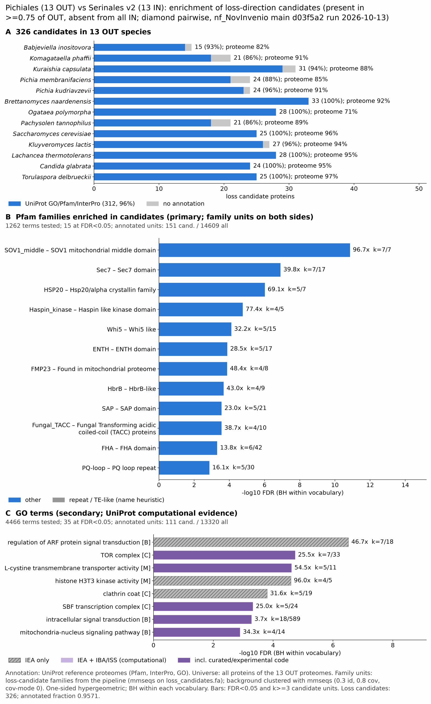

serinales vs pichiales v2: functional enrichment (loss)
One-sided hypergeometric test per term; Benjamini-Hochberg FDR within each scope, level and vocabulary. Candidates are the loss candidates: gene families present in the OUT group and absent from the IN group. Universe: proteome. Background clustered: True (71861 sequences in 22669 clusters, mmseqs easy-cluster --min-seq-id 0.3 -c 0.8). Family level: one unit per candidate family and per background cluster.
Sources: Pfam: 2026-01-27-Pfam38.2; InterPro entries: 110.0; GO: releases/2026-07-26; analysis generated 2026-10-16T22:54:46. Source tables: studies/fungi/serinales_vs_pichiales_v2/analysis/enrichment/outputs/loss/proteome_clustered.
Full record: PROVENANCE. Run report: report.html.
- Annotation provenance is not fully recorded: PROVENANCE.yaml lists the per-species annotation files and their checksums, but not the UniProt release they come from.
- GO results are secondary. GO annotations include computational evidence (IEA, IBA); the GO evidence column shows if a term has non-IEA support.
- Candidate families (pipeline clustering of candidates) and background clusters (mmseqs clustering of the background proteome) are made by different runs, so family-level counts are not fully comparable.
Summary figure

Annotation coverage
Fraction of proteins with at least one term per vocabulary. Universe = all proteins of the species; candidates = the candidate set.
| Species | Set | Proteins | Pfam | Pfam clan | InterPro | GO | Any |
|---|---|---|---|---|---|---|---|
| Babjinos | universe | 6393 | 79.0% | 62.0% | 82.1% | 74.0% | 82.4% |
| Babjinos | candidates | 15 | 86.7% | 60.0% | 93.3% | 73.3% | 93.3% |
| Komaphaf | universe | 5075 | 87.7% | 68.1% | 90.6% | 82.5% | 90.9% |
| Komaphaf | candidates | 21 | 85.7% | 76.2% | 85.7% | 57.1% | 85.7% |
| Kuracaps | universe | 6027 | 84.6% | 67.4% | 88.0% | 79.2% | 88.3% |
| Kuracaps | candidates | 31 | 90.3% | 64.5% | 90.3% | 64.5% | 93.5% |
| Pichmemb | universe | 5536 | 81.6% | 64.9% | 85.0% | 77.1% | 85.3% |
| Pichmemb | candidates | 24 | 75.0% | 54.2% | 87.5% | 54.2% | 87.5% |
| Pichkudr | universe | 5146 | 86.7% | 68.2% | 90.4% | 81.9% | 90.7% |
| Pichkudr | candidates | 24 | 87.5% | 66.7% | 95.8% | 62.5% | 95.8% |
| Bretnaar | universe | 5164 | 88.4% | 70.2% | 91.7% | 82.9% | 92.2% |
| Bretnaar | candidates | 33 | 93.9% | 72.7% | 97.0% | 63.6% | 100.0% |
| Ogatpoly | universe | 6801 | 68.1% | 55.0% | 70.8% | 64.0% | 71.0% |
| Ogatpoly | candidates | 28 | 96.4% | 64.3% | 100.0% | 64.3% | 100.0% |
| Pachtann | universe | 5643 | 85.8% | 67.1% | 88.9% | 80.3% | 89.3% |
| Pachtann | candidates | 21 | 85.7% | 66.7% | 85.7% | 57.1% | 85.7% |
| Sacccere | universe | 6066 | 88.6% | 66.3% | 90.9% | 94.8% | 96.4% |
| Sacccere | candidates | 25 | 96.0% | 64.0% | 100.0% | 100.0% | 100.0% |
| Kluylact | universe | 5071 | 90.6% | 68.8% | 93.2% | 84.4% | 93.8% |
| Kluylact | candidates | 27 | 92.6% | 66.7% | 96.3% | 70.4% | 96.3% |
| Lachther | universe | 5093 | 91.7% | 69.8% | 94.6% | 85.0% | 95.0% |
| Lachther | candidates | 28 | 92.9% | 64.3% | 100.0% | 67.9% | 100.0% |
| Candglab | universe | 5198 | 91.2% | 68.9% | 94.1% | 89.9% | 95.3% |
| Candglab | candidates | 24 | 95.8% | 66.7% | 100.0% | 75.0% | 100.0% |
| Torudelb | universe | 4974 | 92.9% | 70.1% | 95.3% | 90.9% | 96.5% |
| Torudelb | candidates | 25 | 92.0% | 68.0% | 96.0% | 88.0% | 100.0% |
| ALL_OUT | universe | 72187 | 85.4% | 66.3% | 88.3% | 81.6% | 89.2% |
| ALL_OUT | candidates | 326 | 90.5% | 66.0% | 94.8% | 69.0% | 95.7% |
Tests summary
Per vocabulary: terms with FDR < 0.05 / terms tested. Protein level counts proteins; family level counts candidate families and background clusters.
| Scope | Level | Cand. units | Pfam sig / tested | Pfam clan sig / tested | InterPro sig / tested | GO sig / tested |
|---|---|---|---|---|---|---|
| whole_set | family | 174 | 15 / 1262 | 6 / 318 | 30 / 2404 | 35 / 4466 |
| whole_set | protein | 326 | 34 / 4298 | 15 / 480 | 64 / 8828 | 88 / 7183 |
| Babjinos | family | 15 | 0 / 170 | 0 / 184 | 0 / 487 | 0 / 2443 |
| Babjinos | protein | 15 | 0 / 246 | 0 / 204 | 0 / 648 | 0 / 2598 |
| Bretnaar | family | 33 | 0 / 148 | 0 / 174 | 0 / 443 | 0 / 1868 |
| Bretnaar | protein | 33 | 0 / 199 | 0 / 188 | 0 / 559 | 0 / 2003 |
| Candglab | family | 24 | 0 / 152 | 0 / 169 | 0 / 447 | 0 / 3063 |
| Candglab | protein | 24 | 0 / 215 | 0 / 189 | 0 / 597 | 0 / 3216 |
| Kluylact | family | 27 | 0 / 149 | 0 / 173 | 0 / 448 | 0 / 1952 |
| Kluylact | protein | 27 | 0 / 187 | 0 / 184 | 0 / 536 | 0 / 2051 |
| Komaphaf | family | 21 | 0 / 145 | 0 / 172 | 0 / 438 | 0 / 2423 |
| Komaphaf | protein | 21 | 0 / 181 | 0 / 186 | 0 / 530 | 0 / 2522 |
| Kuracaps | family | 31 | 0 / 171 | 0 / 186 | 0 / 479 | 0 / 2465 |
| Kuracaps | protein | 31 | 0 / 237 | 0 / 201 | 0 / 622 | 0 / 2583 |
| Lachther | family | 28 | 0 / 147 | 0 / 175 | 0 / 443 | 0 / 1931 |
| Lachther | protein | 28 | 0 / 193 | 0 / 185 | 0 / 544 | 0 / 2056 |
| Ogatpoly | family | 28 | 0 / 169 | 0 / 181 | 0 / 480 | 0 / 2047 |
| Ogatpoly | protein | 28 | 0 / 207 | 0 / 194 | 0 / 585 | 0 / 2155 |
| Pachtann | family | 21 | 0 / 169 | 0 / 176 | 0 / 473 | 0 / 2075 |
| Pachtann | protein | 21 | 0 / 227 | 0 / 190 | 0 / 606 | 0 / 2230 |
| Pichkudr | family | 24 | 0 / 149 | 0 / 173 | 0 / 419 | 0 / 2013 |
| Pichkudr | protein | 24 | 0 / 202 | 0 / 191 | 0 / 543 | 0 / 2138 |
| Pichmemb | family | 24 | 0 / 153 | 0 / 176 | 0 / 451 | 0 / 2326 |
| Pichmemb | protein | 24 | 0 / 200 | 0 / 194 | 0 / 565 | 0 / 2420 |
| Sacccere | family | 25 | 0 / 169 | 0 / 175 | 0 / 486 | 0 / 3431 |
| Sacccere | protein | 25 | 0 / 269 | 0 / 200 | 0 / 711 | 0 / 3712 |
| Torudelb | family | 25 | 0 / 143 | 0 / 173 | 0 / 436 | 0 / 3145 |
| Torudelb | protein | 25 | 0 / 195 | 0 / 188 | 0 / 544 | 0 / 3235 |
Top 25 Pfam terms (whole set, family level)
25 rows shown, ordered by FDR then p-value; 15 have FDR < 0.05 (bold).
| Term | Name | k / N cand. | n / M bg | Fold | FDR (BH) |
|---|---|---|---|---|---|
| PF29832 | SOV1_middle: SOV1 mitochondrial middle domain | 7 / 151 | 7 / 14609 | 96.748 | 1.38e-11 |
| PF01369 | Sec7: Sec7 domain | 7 / 151 | 17 / 14609 | 39.838 | 1.23e-07 |
| PF00011 | HSP20: Hsp20/alpha crystallin family | 5 / 151 | 7 / 14609 | 69.106 | 9.59e-07 |
| PF12330 | Haspin_kinase: Haspin like kinase domain | 4 / 151 | 5 / 14609 | 77.399 | 1.72e-05 |
| PF08528 | Whi5: Whi5 like | 5 / 151 | 15 / 14609 | 32.249 | 7.70e-05 |
| PF01417 | ENTH: ENTH domain | 5 / 151 | 17 / 14609 | 28.455 | 1.30e-04 |
| PF17315 | FMP23: Found in mitochondrial proteome | 4 / 151 | 8 / 14609 | 48.374 | 1.34e-04 |
| PF08539 | HbrB: HbrB-like | 4 / 151 | 9 / 14609 | 42.999 | 2.09e-04 |
| PF02037 | SAP: SAP domain | 5 / 151 | 21 / 14609 | 23.035 | 2.76e-04 |
| PF12709 | Fungal_TACC: Fungal Transforming acidic coiled-coil (TACC) proteins | 4 / 151 | 10 / 14609 | 38.699 | 2.77e-04 |
| PF00498 | FHA: FHA domain | 6 / 151 | 42 / 14609 | 13.821 | 4.89e-04 |
| PF04193 | PQ-loop: PQ loop repeat | 5 / 151 | 30 / 14609 | 16.125 | 0.001 |
| PF01424 | R3H: R3H domain | 4 / 151 | 16 / 14609 | 24.187 | 0.002 |
| PF10452 | TCO89: TORC1 subunit TCO89 | 3 / 151 | 7 / 14609 | 41.464 | 0.003 |
| PF08550 | GATA_AreA: Nitrogen regulatory protein areA, GATA-like domain | 4 / 151 | 24 / 14609 | 16.125 | 0.008 |
| PF08737 | Rgp1: Rgp1 | 2 / 151 | 5 / 14609 | 38.699 | 0.082 |
| PF11470 | TUG-UBL1: TUG ubiquitin-like domain | 2 / 151 | 6 / 14609 | 32.249 | 0.115 |
| PF20775 | Tag1_N: Tag1 N-terminal domain | 2 / 151 | 7 / 14609 | 27.642 | 0.151 |
| PF12660 | zf-TFIIIC: Putative zinc-finger of transcription factor IIIC complex | 2 / 151 | 8 / 14609 | 24.187 | 0.189 |
| PF01846 | FF: FF domain | 2 / 151 | 9 / 14609 | 21.5 | 0.219 |
| PF22786 | Tag1_C: Tag1 C-terminal domain | 2 / 151 | 9 / 14609 | 21.5 | 0.219 |
| PF02194 | PXA: PXA domain | 2 / 151 | 11 / 14609 | 17.591 | 0.301 |
| PF02535 | Zip: ZIP Zinc transporter | 2 / 151 | 11 / 14609 | 17.591 | 0.301 |
| PF02936 | COX4: Cytochrome c oxidase subunit IV | 2 / 151 | 12 / 14609 | 16.125 | 0.344 |
| PF30880 | PRTT-like_M: Transcriptional activator of proteases prtT middle domain | 2 / 151 | 13 / 14609 | 14.884 | 0.388 |
Top 25 InterPro terms (whole set, family level)
25 rows shown, ordered by FDR then p-value; 25 have FDR < 0.05 (bold).
| Term | Name | k / N cand. | n / M bg | Fold | FDR (BH) |
|---|---|---|---|---|---|
| IPR063435 | Domain:SOV1, middle domain | 7 / 161 | 7 / 15485 | 96.18 | 2.77e-11 |
| IPR050923 | Family:Cellular Process Regulator and RNA Processing Protein | 6 / 161 | 6 / 15485 | 96.18 | 1.38e-09 |
| IPR000904 | Domain:Sec7 domain | 7 / 161 | 17 / 15485 | 39.604 | 9.87e-08 |
| IPR023394 | Homologous_superfamily:Sec7, C-terminal domain superfamily | 7 / 161 | 17 / 15485 | 39.604 | 9.87e-08 |
| IPR035999 | Homologous_superfamily:Sec7 domain superfamily | 7 / 161 | 17 / 15485 | 39.604 | 9.87e-08 |
| IPR031107 | Family:Small heat shock protein | 5 / 161 | 6 / 15485 | 80.15 | 2.72e-07 |
| IPR002068 | Domain:Alpha crystallin/Hsp20 domain | 5 / 161 | 7 / 15485 | 68.7 | 8.10e-07 |
| IPR039198 | Family:Srl3/Whi5 | 5 / 161 | 8 / 15485 | 60.113 | 1.87e-06 |
| IPR005282 | Family:Lysosomal cystine transporter | 5 / 161 | 10 / 15485 | 48.09 | 7.37e-06 |
| IPR024604 | Domain:Serine/threonine-protein kinase haspin, C-terminal | 4 / 161 | 5 / 15485 | 76.944 | 1.22e-05 |
| IPR038882 | Family:Respiratory complex factor Rcf3 | 4 / 161 | 5 / 15485 | 76.944 | 1.22e-05 |
| IPR008978 | Homologous_superfamily:HSP20-like chaperone | 5 / 161 | 14 / 15485 | 34.35 | 4.25e-05 |
| IPR013734 | Conserved_site:Transcription factor Nrm1/Whi5 | 5 / 161 | 15 / 15485 | 32.06 | 5.83e-05 |
| IPR035283 | Domain:Protein Fmp23 | 4 / 161 | 8 / 15485 | 48.09 | 1.31e-04 |
| IPR013745 | Family:TORC2 component Bit61/PRR5 | 4 / 161 | 9 / 15485 | 42.747 | 2.18e-04 |
| IPR024312 | Domain:TACC, C-terminal, fungi | 4 / 161 | 10 / 15485 | 38.472 | 3.38e-04 |
| IPR003034 | Domain:SAP domain | 5 / 161 | 23 / 15485 | 20.909 | 4.67e-04 |
| IPR013809 | Domain:ENTH domain | 5 / 161 | 25 / 15485 | 19.236 | 6.85e-04 |
| IPR036361 | Homologous_superfamily:SAP domain superfamily | 5 / 161 | 27 / 15485 | 17.811 | 9.69e-04 |
| IPR006603 | Repeat:PQ-loop repeat | 5 / 161 | 30 / 15485 | 16.03 | 0.002 |
| IPR000253 | Domain:Forkhead-associated (FHA) domain | 6 / 161 | 51 / 15485 | 11.315 | 0.002 |
| IPR008984 | Homologous_superfamily:SMAD/FHA domain superfamily | 6 / 161 | 52 / 15485 | 11.098 | 0.002 |
| IPR001374 | Domain:R3H domain | 4 / 161 | 17 / 15485 | 22.631 | 0.003 |
| IPR036867 | Homologous_superfamily:R3H domain superfamily | 4 / 161 | 18 / 15485 | 21.373 | 0.003 |
| IPR018857 | Family:TORC1 complex, subunit TCO89 | 3 / 161 | 7 / 15485 | 41.22 | 0.003 |
Top 15 GO terms (whole set, family level) — secondary, computational evidence (IEA/IBA) included
15 rows shown, ordered by FDR then p-value; 15 have FDR < 0.05 (bold).
| Term | Name | k / N cand. | n / M bg | Fold | FDR (BH) | GO evidence | Families with non-IEA |
|---|---|---|---|---|---|---|---|
| GO:0032012 | biological_process:regulation of ARF protein signal transduction | 7 / 111 | 18 / 13320 | 46.667 | 3.04e-07 | IEA_only | 0 |
| GO:0038201 | cellular_component:TOR complex | 7 / 111 | 33 / 13320 | 25.455 | 1.84e-05 | has_non_IEA | 1 |
| GO:0015184 | molecular_function:L-cystine transmembrane transporter activity | 5 / 111 | 11 / 13320 | 54.545 | 2.43e-05 | has_non_IEA | 1 |
| GO:0072354 | molecular_function:histone H3T3 kinase activity | 4 / 111 | 5 / 13320 | 96.0 | 2.53e-05 | IEA_only | 0 |
| GO:0000099 | molecular_function:sulfur amino acid transmembrane transporter activity | 5 / 111 | 14 / 13320 | 42.857 | 6.18e-05 | has_non_IEA | 1 |
| GO:0140996 | molecular_function:histone H3 kinase activity | 4 / 111 | 7 / 13320 | 68.571 | 1.17e-04 | IEA_only | 0 |
| GO:0051056 | biological_process:regulation of small GTPase mediated signal transduction | 7 / 111 | 53 / 13320 | 15.849 | 1.55e-04 | IEA_only | 0 |
| GO:0072349 | molecular_function:modified amino acid transmembrane transporter activity | 5 / 111 | 18 / 13320 | 33.333 | 1.55e-04 | has_non_IEA | 1 |
| GO:0035173 | molecular_function:histone kinase activity | 4 / 111 | 8 / 13320 | 60.0 | 1.55e-04 | IEA_only | 0 |
| GO:0030118 | cellular_component:clathrin coat | 5 / 111 | 19 / 13320 | 31.579 | 1.58e-04 | IEA_only | 0 |
| GO:0030125 | cellular_component:clathrin vesicle coat | 5 / 111 | 19 / 13320 | 31.579 | 1.58e-04 | IEA_only | 0 |
| GO:0031929 | biological_process:TOR signaling | 7 / 111 | 59 / 13320 | 14.237 | 2.05e-04 | has_non_IEA | 1 |
| GO:0033309 | cellular_component:SBF transcription complex | 5 / 111 | 24 / 13320 | 25.0 | 4.72e-04 | has_non_IEA | 1 |
| GO:0035556 | biological_process:intracellular signal transduction | 18 / 111 | 589 / 13320 | 3.667 | 5.26e-04 | has_non_IEA | 4 |
| GO:0031930 | biological_process:mitochondria-nucleus signaling pathway | 4 / 111 | 14 / 13320 | 34.286 | 0.001 | has_non_IEA | 1 |
Actin cytoskeleton controls
Known actin-related families and how many of their proteins pass each filter. Protein ID columns are left out.
| control | pfam_ids | desc_regex | OUT_universe | OUT_in_matrix | OUT_pass_outgroup_rule | candidates | near_miss_in1 | near_miss_in2 | n_Babjinos | n_Komaphaf | n_Kuracaps | n_Pichmemb | n_Pichkudr | n_Bretnaar | n_Ogatpoly | n_Pachtann | n_Sacccere | n_Kluylact | n_Lachther | n_Candglab | n_Torudelb | n_Candalbi | n_Loddelon | n_Meyeguil | n_Debahans | n_Schestip | n_Spatpass | n_Candtenu | n_Diutrugo | n_Yamajaro | n_Candauri | n_Clavlusi | n_Metsbicu | n_Lizaspar |
|---|---|---|---|---|---|---|---|---|---|---|---|---|---|---|---|---|---|---|---|---|---|---|---|---|---|---|---|---|---|---|---|---|---|---|
| Arp2/3 ARPC2 (P34-Arc) | PF04045 | 13 | 13 | 13 | 0 | 0 | 0 | 1 | 1 | 1 | 1 | 1 | 1 | 1 | 1 | 1 | 1 | 1 | 1 | 1 | 1 | 1 | 1 | 1 | 1 | 1 | 1 | 1 | 1 | 1 | 1 | 1 | 1 | |
| Arp2/3 ARPC3 (P21-Arc) | PF04062 | 13 | 13 | 13 | 0 | 0 | 0 | 1 | 1 | 1 | 1 | 1 | 1 | 1 | 1 | 1 | 1 | 1 | 1 | 1 | 1 | 1 | 1 | 1 | 1 | 1 | 1 | 1 | 1 | 0 | 1 | 1 | 1 | |
| Arp2/3 ARPC4 | PF05856 | 13 | 13 | 13 | 0 | 0 | 0 | 1 | 1 | 1 | 1 | 1 | 1 | 1 | 1 | 1 | 1 | 1 | 1 | 1 | 1 | 1 | 1 | 1 | 1 | 1 | 1 | 1 | 1 | 1 | 1 | 1 | 1 | |
| Arp2/3 ARPC5 (P16-Arc) | PF04699 | 13 | 13 | 13 | 0 | 0 | 0 | 1 | 1 | 1 | 1 | 1 | 1 | 1 | 1 | 1 | 1 | 1 | 1 | 1 | 1 | 1 | 1 | 1 | 1 | 1 | 1 | 1 | 1 | 1 | 1 | 1 | 1 | |
| Arp2/3 ARPC1 (description only) | arp2/3 complex.*(41|p41|subunit 1)|ARPC1 | 0 | 0 | 0 | 0 | 0 | 0 | 0 | 0 | 0 | 0 | 0 | 0 | 0 | 0 | 0 | 0 | 0 | 0 | 0 | 0 | 0 | 0 | 0 | 0 | 0 | 0 | 0 | 0 | 0 | 0 | 0 | 0 | |
| Arp2 / Arp3 (description only) | actin-related protein (2|3)\b|\bARP[23]\b | 87 | 87 | 87 | 0 | 0 | 0 | 7 | 8 | 7 | 7 | 5 | 6 | 7 | 7 | 7 | 6 | 6 | 7 | 7 | 7 | 7 | 7 | 6 | 6 | 7 | 5 | 7 | 7 | 6 | 6 | 4 | 7 | |
| WAVE complex NCKAP1 | PF09735 | 0 | 0 | 0 | 0 | 0 | 0 | 0 | 0 | 0 | 0 | 0 | 0 | 0 | 0 | 0 | 0 | 0 | 0 | 0 | 0 | 0 | 0 | 0 | 0 | 0 | 0 | 0 | 0 | 0 | 0 | 0 | 0 | |
| WAVE complex CYFIP (FragX_IP) | PF05994 | 0 | 0 | 0 | 0 | 0 | 0 | 0 | 0 | 0 | 0 | 0 | 0 | 0 | 0 | 0 | 0 | 0 | 0 | 0 | 0 | 0 | 0 | 0 | 0 | 0 | 0 | 0 | 0 | 0 | 0 | 0 | 0 | |
| WAVE complex ABI | PF07815|PF27594 | 0 | 0 | 0 | 0 | 0 | 0 | 0 | 0 | 0 | 0 | 0 | 0 | 0 | 0 | 0 | 0 | 0 | 0 | 0 | 0 | 0 | 0 | 0 | 0 | 0 | 0 | 0 | 0 | 0 | 0 | 0 | 0 | |
| SCAR/WAVE (SCAR_helical) | PF27569 | 0 | 0 | 0 | 0 | 0 | 0 | 0 | 0 | 0 | 0 | 0 | 0 | 0 | 0 | 0 | 0 | 0 | 0 | 0 | 0 | 0 | 0 | 0 | 0 | 0 | 0 | 0 | 0 | 0 | 0 | 0 | 0 | |
| WASP family (WH1) | PF00568 | 13 | 13 | 13 | 0 | 0 | 0 | 1 | 1 | 1 | 1 | 1 | 1 | 1 | 1 | 1 | 1 | 1 | 1 | 1 | 1 | 1 | 1 | 1 | 1 | 1 | 0 | 1 | 1 | 1 | 1 | 1 | 1 | |
| WH2 motif (WASP, WAVE, others) | PF02205 | 22 | 22 | 22 | 0 | 0 | 0 | 1 | 2 | 2 | 2 | 2 | 1 | 1 | 1 | 2 | 2 | 2 | 2 | 2 | 2 | 3 | 0 | 2 | 2 | 1 | 0 | 2 | 2 | 2 | 1 | 1 | 1 | |
| Formin FH2 | PF02181 | 26 | 26 | 26 | 0 | 0 | 0 | 2 | 2 | 2 | 2 | 2 | 2 | 2 | 2 | 2 | 2 | 2 | 2 | 2 | 2 | 2 | 2 | 2 | 2 | 2 | 2 | 2 | 1 | 2 | 2 | 2 | 2 | |
| Formin Drf_GBD / Drf_FH3 / Drf_DAD | PF06371|PF06367|PF06345 | 22 | 22 | 22 | 0 | 0 | 0 | 2 | 2 | 2 | 2 | 1 | 2 | 1 | 2 | 1 | 2 | 2 | 1 | 2 | 2 | 2 | 2 | 2 | 2 | 2 | 0 | 2 | 0 | 2 | 2 | 2 | 2 | |
| Ena/VASP (VASP_tetra) | PF08776 | 0 | 0 | 0 | 0 | 0 | 0 | 0 | 0 | 0 | 0 | 0 | 0 | 0 | 0 | 0 | 0 | 0 | 0 | 0 | 0 | 0 | 0 | 0 | 0 | 0 | 0 | 0 | 0 | 0 | 0 | 0 | 0 | |
| Coronin (description only) | coronin | 13 | 13 | 13 | 0 | 0 | 0 | 1 | 1 | 1 | 1 | 1 | 1 | 1 | 1 | 1 | 1 | 1 | 1 | 1 | 1 | 0 | 0 | 1 | 0 | 1 | 1 | 1 | 1 | 1 | 0 | 1 | 1 | |
| Cortactin (HS1_rep) | PF02218 | 0 | 0 | 0 | 0 | 0 | 0 | 0 | 0 | 0 | 0 | 0 | 0 | 0 | 0 | 0 | 0 | 0 | 0 | 0 | 0 | 0 | 0 | 0 | 0 | 0 | 0 | 0 | 0 | 0 | 0 | 0 | 0 | |
| Myosin 2 tail (Myosin_tail_1) | PF01576 | 0 | 0 | 0 | 0 | 0 | 0 | 0 | 0 | 0 | 0 | 0 | 0 | 0 | 0 | 0 | 0 | 0 | 0 | 0 | 0 | 0 | 0 | 0 | 0 | 0 | 0 | 0 | 0 | 0 | 0 | 0 | 0 | |
| Myosin head (all myosins) | PF00063 | 43 | 43 | 43 | 0 | 0 | 0 | 3 | 3 | 3 | 2 | 4 | 3 | 3 | 3 | 5 | 3 | 3 | 5 | 3 | 3 | 3 | 3 | 3 | 3 | 3 | 0 | 3 | 3 | 3 | 3 | 2 | 3 |
Page written by bin/generate_enrichment_page.py.